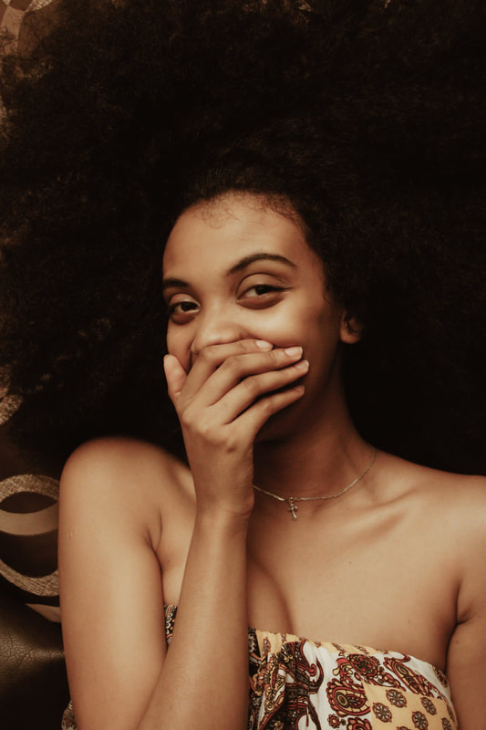
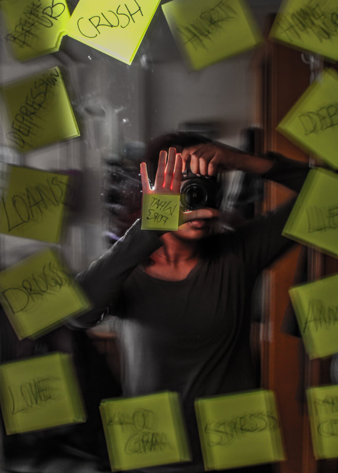

A Little Backgroud
I am 22 years old, born and raised in Addis Ababa, Ethiopia. I have
one older brother and a younger sister. I went to a private school in
the city called Dandii Boru and was there my entire young adult school
life.
In 2019 after I graudated high school, I came to Albany, NY to attend
Siena College for my Bachelors degree in Computer Science. Later
changed to Software Devlopment to make the area of study more
specific.
I am set to finish my program on June 24 but celebrating graudation on
May with the rest of my class year. I have learned so much through my
4-year experience in Siena. Time management, Communication, Team
Collaborating, different software languages and other technical and
soft skills.
One main hobby of mine --- photography

I use both my phone and digital camera to take my pictures and use free apps mostly to edit them. I believe in simplicity instead of forcing creativity.
